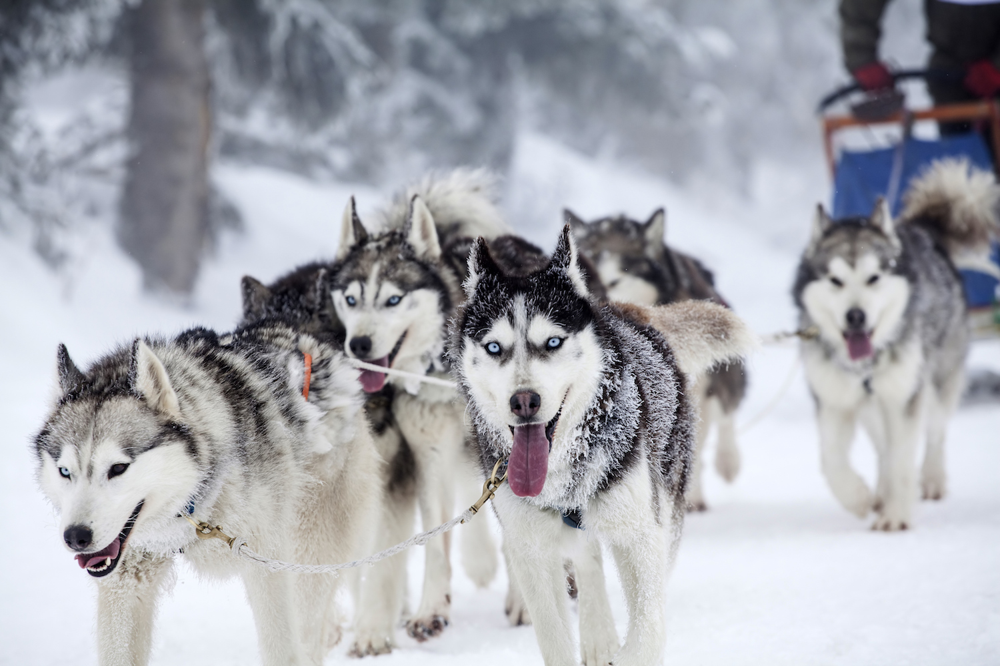

You're speeding through Alaskan forest, sitting on a sled that's being pulled by some of Alaska's most powerful creatures. This is dog sledding—and it's not only an Alaskan tradition, but also a state obsession, one that's celebrated every March with the running of the 1,150-mile Iditarod Sled Dog Race from Anchorage to Nome. Taking a dogsledding excursion is a chance to see what the fuss is all about. You'll meet Iditarod racers and their dogs and hear what it's like to run this brutal race. And often, you'll experience the thrill of dogsledding first-hand.
